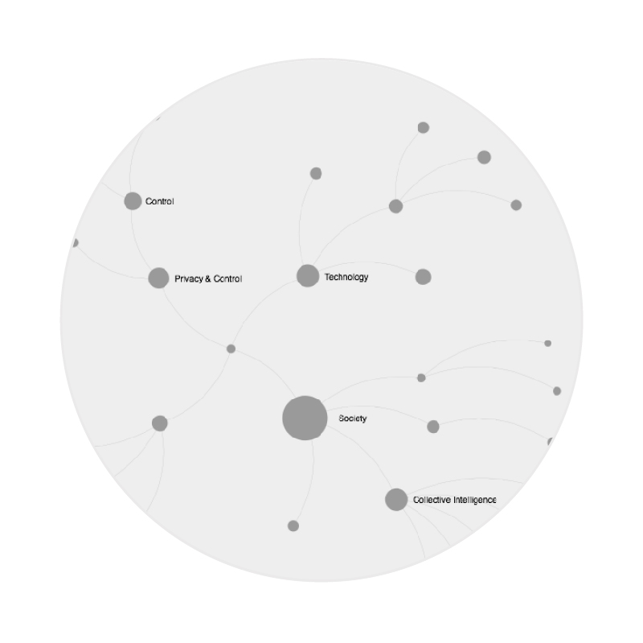
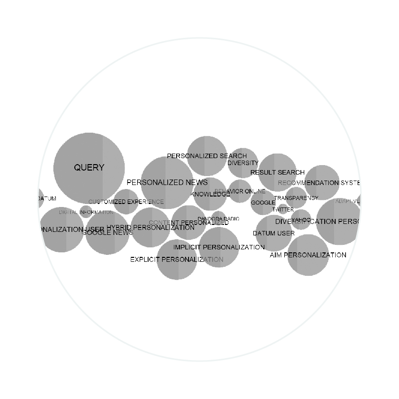
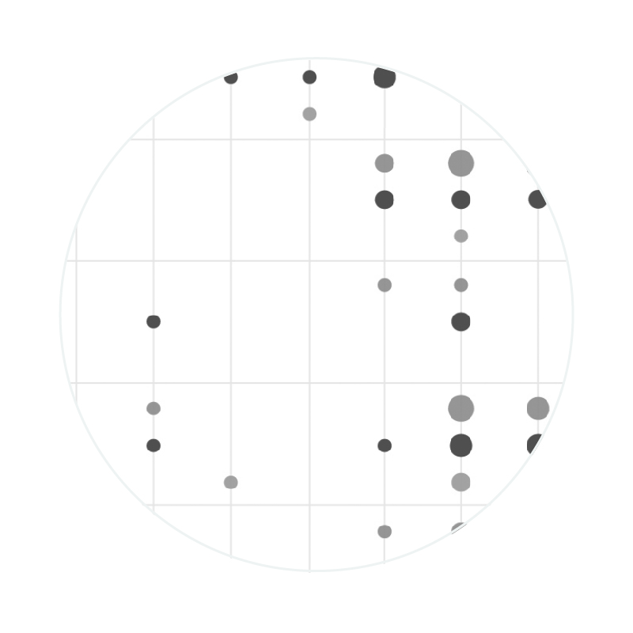
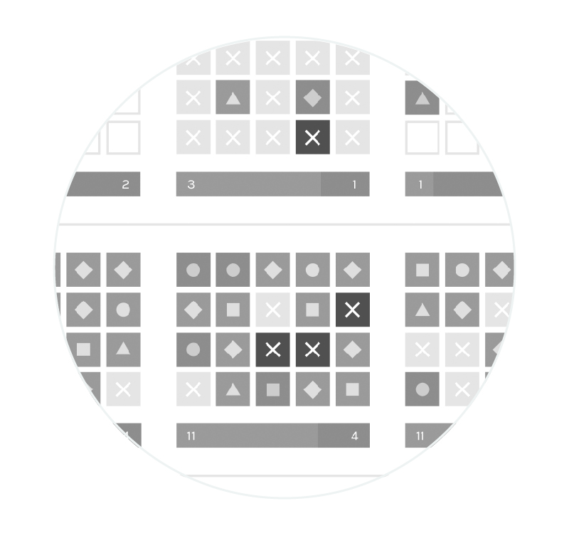

The web personalization, is a process that makes the results of a search on the web adapted to a specific user, by filtering the contents according to the parameters that are based on the algorithms. These are necessary to make the search engine works and they use data left by the consumer on the web, that are also used to create profiles to differentiate users.
Even if most of the users are aware of the virtues of the search engines, as they improve their experience and as many people now depend on them to get information, the web personalization has generated a series of ethical concerns related to objectivity and bias in the context of search engines, related to lack of transparency, as the companies of the search engines do not always reveal their practices regarding the collection of information about users and how they treat them once collected. Moreover another aspect of the debate was born by the consideration that results generated “ad hoc” for a user limits the serendipity and the diversity of a research, not allowing the person that is searching to expand his knowledge.
This research has the aim to explore the debate generated by the controversy of web personalization and to answer the research question “More personalization is equal to more knowledge?”. It is divided in four section and for each one of these are presented an explanation of how the research was conducted, that is called protocol, and the results of the research, represented by a main visualization.
The research started approaching to the debate using as a source Wikipedia, so to understand the fields in which the discussion was taking place and to find the research question. The second chapter has the aim to find the debate sides and to show how the features of the different positions. The last two chapter extended the research on the debate to two fields that are relevant for the research question: the academic side and the journalistic one.
By Francesco Padovani, Lucia Pellegrini, Elisa Riva, Rodolfo Riva, Marco Saporiti, Irene Tribuzio
Is more personalization
equal to more knowledge?
Chapters

Exploring the Web personalization
The protocol 1 was created to find the area to analyze about the debate of web personalization and the queries for the research.

Introducing the debate
In this section you can see that there is a debate around the web personalization. This dispute is characterized by the comparison between the ethical and marketing aspect. You can see the words which make one think and make one do spontaneous questions.

The academic side
This part shows how in 2011 the topic is particularly debated. From that year people began to consider ethic and privacy aspect as well as technology. You see the red dots (Con) grew i the last years.

The journalistic side
Here you can see an analysis carried out on two newspapers and google news. You notice a positioning for those who provide the information and how it evolved over the past five years.
project by
- Francesco Padovani
- Lucia Pellegrini
- Elisa Riva
- Rodolfo Riva
- Marco Saporiti
- Irene Tribuzio
Faculty
- Paolo Ciuccarelli
- Marco Fattore
- Stefano Mandato
- Donato Ricci
- Salvatore Zingale
Teaching Assistants
- Matteo Azzi
- Daniele Ciminieri
- Michele Mauri
- Azzurra Pini
- Giorgio Uboldi